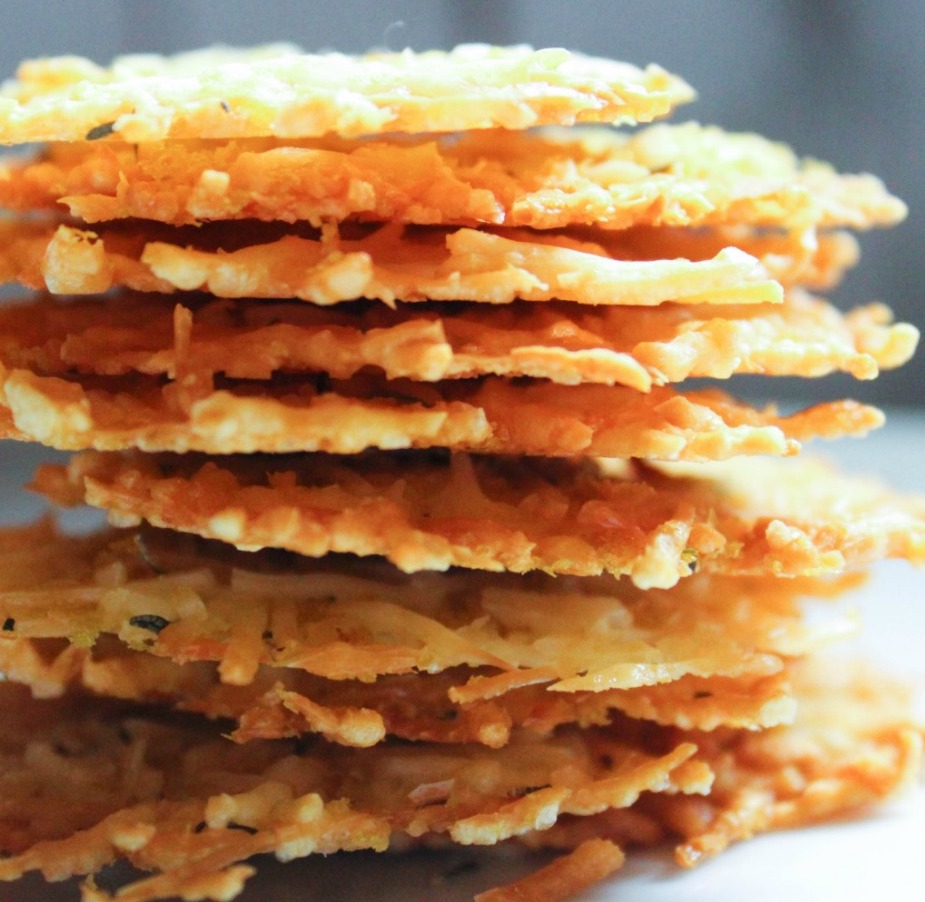

Back
Cheese Crisps
Ingredients
- 1.5 Cups Shredded Parmesan Cheese (not the green can kind, but the kind you buy in a bag or small plastic container)
- 1/4 Cup Nutritional Yeast
- 1/2 Teaspoon Thyme

Instructions
- Preheat oven to 400.
- Mix all three ingredients together and place small mounds of the mixture on a cookie sheet lined with parchment paper or a Silicone Baking Mat (I used 1 Tablespoon per mound).
- Bake at 400 for 5-7 minutes. They can burn very easily, so you may want to keep a close eye on them.
Source